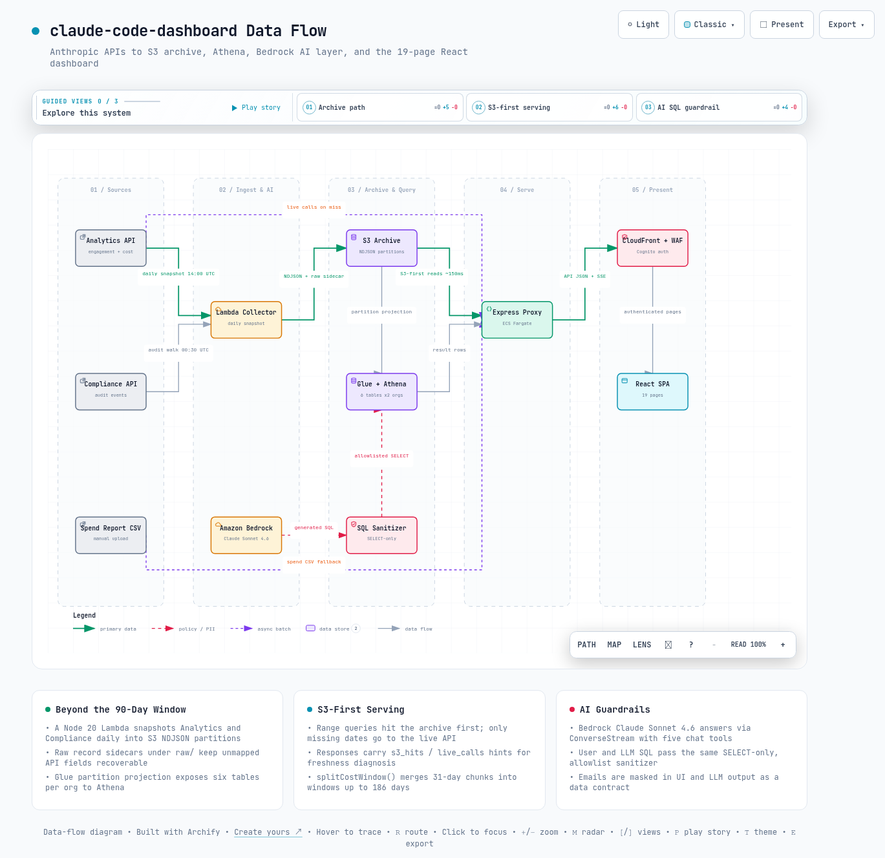

01문제 정의 - 조직 도입에서 무엇을 측정하는가
이 절은 이 대시보드가 어떤 질문에 답하려고 만들어졌는지, 그리고 왜 데이터를 모으는 일 자체가 어려운지를 설명합니다. 이후 절의 설계 결정은 모두 여기서 출발합니다.
Claude Code를 팀 단위로 도입하면 "잘 쓰이고 있는가"라는 질문이 곧바로 네 개로 갈라집니다. 누가 얼마나 자주 쓰는가(참여도), 무엇을 만들어냈는가(생산성), 얼마를 쓰는가(비용), 무엇을 했는가(감사)입니다. claude-code-dashboard는 여기에 다섯 번째 축인 "이 데이터가 무엇을 의미하는가"(AI 분석)를 더해 하나의 대시보드로 통합합니다.
Anthropic은 이 질문들에 답할 원천 데이터를 API로 제공합니다. 다만 축마다 소스가 다릅니다. 참여도와 Claude Code 생산성은 Analytics API(조직의 사용 통계를 내려주는 조회 API)의 engagement 계열(사용자 활동 데이터 묶음)에서 나옵니다.
비용은 같은 키로 부르는 cost 계열 엔드포인트 4개가 담당합니다. 감사 이벤트는 Compliance API(로그인, 권한 변경 같은 보안 이벤트를 내려주는 API)가 담당합니다. 어느 소스에도 다른 축의 데이터가 없어서, 예를 들어 "사용자별 지출 대비 산출"을 보려면 두 소스를 이메일로 조인해야 합니다.
이 표에서는 다섯 개 측정 축이 각각 어떤 소스에서 오는지를 봅니다.
| 측정 축 | 소스 | 대표 데이터 |
|---|---|---|
| 참여도 | Analytics /summaries, /users | DAU/WAU/MAU, 좌석 수, 도입률 |
| 생산성 | Analytics /users의 claude_code_metrics | LOC 추가/삭제, 커밋, PR, 도구별 수락/거절 |
| 비용 | Analytics cost 계열 4종, Spend Limits API, Spend Report CSV(폴백) | 조직/사용자별 USD 지출, 토큰, 모델별 점유율 |
| 감사 | Compliance /v1/compliance/activities | 로그인, 역할 변경, 데이터 export 등 35종 이상 이벤트 |
| 해석 | Amazon Bedrock + Athena 아카이브 | 자연어 질의에 대한 Markdown 분석 리포트 |
그렇다면 API를 직접 호출해서 화면을 그리면 되지 않을까요? 두 번째 문제인 조회창 제한 때문에 어렵습니다. Analytics API는 조회 가능 기간이 90일입니다.
engagement 계열은 오늘부터 3일 이내 날짜를 조회할 수 없습니다(3일 버퍼). cost 계열은 요청당 최대 31일 범위만 허용합니다. 호출 횟수 제한(rate limit)도 키가 아니라 조직 단위로 60 rpm(분당 60회)이라, 뷰어 여러 명이 동시에 접속하면 이 예산을 나눠 씁니다.
결국 분기 단위 리포팅이나 연간 추세 분석은 API 직접 호출로는 불가능합니다. 이것이 이 프로젝트가 S3 아카이브 계층을 두는 이유입니다.
원칙: 이 대시보드의 설계 문제는 "차트를 그리는 것"이 아닙니다. 소스가 갈라져 있고 조회창이 제한된 API들을, 조인 가능하고 보존 가능한 형태로 재구성하는 것입니다.
02동작 원리 - 데이터 파이프라인
이 절은 데이터가 Anthropic API에서 출발해 어떤 경로로 화면까지 도달하는지를 따라갑니다. 수집, 서빙, 표시의 세 단계로 나누어 봅니다.
전체 구조는 3계층입니다. 브라우저에서 도는 React SPA(한 번 로드된 뒤 화면 전환 없이 동작하는 단일 페이지 앱, React 18 + Vite 5 + TypeScript 5, Recharts 2), ECS Fargate에서 도는 Express 4 프록시, 그리고 90일 API 조회창 너머의 보존을 담당하는 S3 + Glue + Athena 아카이브입니다. CloudFront와 WAF가 ALB 앞을 막고, ALB 보안 그룹은 CloudFront 관리형 prefix list로 잠겨 있어 직접 접근이 차단됩니다.
(Analytics / Compliance)"] --> COL["Lambda collector
(매일 스냅샷)"] COL --> S3[("S3 NDJSON
파티션 아카이브")] S3 --> ATH["Glue + Athena"] API --> EXP["Express 프록시
(ECS Fargate)"] S3 --> EXP ATH --> EXP BR["Amazon Bedrock
(Claude Sonnet 4.6)"] --> EXP EXP --> SPA["React SPA
(19 페이지)"]
2.1 수집 - collector Lambda
Node 20 Lambda(collector/handler.js)가 EventBridge 스케줄로 매일 실행됩니다. Analytics API의 5개 engagement 엔드포인트(users, summaries, skills, connectors, projects)와 Compliance 감사 피드를 그날 상태 그대로 스냅샷합니다.
결과는 NDJSON(한 줄에 JSON 레코드 하나를 담는 텍스트 형식)으로 s3://<bucket>/<table>/date=YYYY-MM-DD/ 경로에 날짜별로 쌓입니다. Glue Data Catalog의 테이블 6종(claude_code_analytics, summaries_daily, skills_daily, connectors_daily, projects_daily, compliance_daily)이 파티션 프로젝션(날짜별 폴더를 별도 등록 없이 테이블 파티션으로 읽는 Glue 기능)으로 이를 읽습니다.
특징은 원본 레코드 사이드카입니다. 평탄화 매핑이 아직 다루지 않는 API 필드를 나중에 복구할 수 있도록, 원본 응답을 raw/<table>/ 아래에 함께 남깁니다.
2.2 서빙 - Express 프록시의 S3 우선 전략
기간 조회(/api/analytics/users/range 등)는 S3 아카이브를 먼저 읽습니다. 캐시 미스가 난 날짜만 실 API로 나갑니다. S3에서 읽으면 얼마나 빠를까요? README는 S3 히트 시 응답을 약 150 ms로 서술합니다.
응답에는 {"s3_hits": 14, "live_calls": 0} 형태의 캐시 힌트가 실립니다. 아카이브가 얼마나 최신인지 바로 진단할 수 있습니다. 서버에는 10분 in-memory 캐시, stale-while-revalidate(오래된 캐시를 일단 응답하고 뒤에서 갱신하는 방식)의 비용 캐시, UI 프리셋 창을 미리 데우는 keep-warm 스케줄러가 있어 조직 단위 60 rpm 예산 안에서 다중 뷰어를 감당합니다.
그러면 31일이 넘는 긴 기간 조회는 어떻게 처리할까요? cost 계열의 요청당 31일 상한은 서버가 흡수합니다. splitCostWindow()(server/aws.js)가 긴 창을 31일 이하 청크 최대 6개로 쪼개 병합하므로, 대시보드는 한 번의 질의로 최대 186일 창까지 정확한 합산을 보여줍니다.
그 이상의 기간은 최근 구간으로 잘라서 보여줍니다. 잘렸다는 사실은 배너로 알립니다.
2.3 표시 - React SPA
프론트는 19개 라우트로 구성됩니다. 영어/한국어 런타임 토글, 7일 기본의 날짜 범위 컨트롤, 사용자 행을 클릭하면 열리는 드릴다운 패널이 있습니다. Analyze, Cost, Executive 페이지는 print CSS 기반의 PDF 내보내기를 지원합니다.
Analytics, Admin, Compliance 키는 각각 별도의 Secrets Manager 시크릿(ccd/analytics-key 등)으로 주입됩니다. 없는 키에 해당하는 페이지만 조용히 비활성화됩니다. Analytics 키 하나만으로 참여도와 생산성 페이지가 동작하고, CLAUDE.md에 따르면 현재는 Analytics 키의 scope가 compliance 읽기까지 커버해 전용 Compliance 키 없이도 서버가 자동 폴백합니다.
03핵심 지표와 산식
이 절은 대시보드가 화면에 보여주는 숫자들이 실제로 어떻게 계산되는지를 다룹니다. 산식을 알아야 숫자를 잘못 읽는 일을 피할 수 있기 때문입니다.
파생 지표 전체는 docs/metrics-catalog.md에 공식과 함께 문서화되어 있습니다. 여기서는 의사결정에 직접 쓰이는 대표 지표 네 가지를 코드 기준으로 살펴봅니다.
3.1 도구 수락률 (Tool Acceptance Rate)
가장 기본이 되는 품질 지표입니다. Claude Code의 편집 도구 4종(edit, multi_edit, write, notebook_edit)이 낸 제안 중 사용자가 수락한 비율입니다. accepted / (accepted + rejected)로 계산합니다.
AI 제안 품질과 사용자 신뢰도가 결합된 지표입니다. 분모가 0이면 null로 두어 "데이터 없음"과 "0%"를 구분합니다.
3.2 활동 점수 (User Activity Score)
비용 데이터 없이 Analytics만으로 사용자별 랭킹을 만드는 점수입니다. 다섯 항목의 가중합이며, 각 항목은 목표치 대비 정규화한 뒤 0에서 1 사이로 자릅니다(클램프).
score = 0.30 * N(LOC_added_per_day / 200)
+ 0.25 * user_acceptance_rate
+ 0.20 * N(commits_per_day / 1.5)
+ 0.15 * N(active_day_share / 0.4)
+ 0.10 * N(sessions_per_day / 3) # N(x) = [0,1] 클램프3.3 경제 생산성 점수 (Cost-Efficiency Score v3)
사용자별 지출(cost 계열)과 산출(Analytics)을 이메일로 조인해 "달러당 산출"을 순위화하는 점수입니다. 코드는 server/aws.js의 scoreEconomicProductivity()입니다.
계산은 세 단계입니다. 표면별 산출(code, cowork, office, design)을 각 표면의 활성 사용자 집단 안에서 winsorize(극단값을 일정 범위 안으로 눌러 담는 통계 처리)한 뒤 중앙값을 기준으로 정규화합니다. 그다음 활성 표면 평균을 지출로 나누고, 그 값을 다시 집단 안에서 정규화해 value 항을 만듭니다.
weights: { value: 0.55, acceptance: 0.25, delivery: 0.12, breadth: 0.08 }
churnDiscount: 0.5 // code_raw = loc_added - 0.5 * loc_removed
deliveryIdeal: 2.0 // delivery = (commits+prs)/active_days / 2.0docs/metrics-catalog.md 4.4절에는 이전 버전 공식(가중치 0.35 / 0.20 / 0.20 / 0.15 / 0.10)이 남아 있습니다. 실제 배포 코드와 README는 모두 v3(0.55 / 0.25 / 0.12 / 0.08)이며, 본 문서는 코드를 기준으로 서술합니다.
3.4 프롬프트당 작업 수 (Actions per Prompt)
Agentic 페이지의 위임도 지표입니다. 한 번의 지시로 AI가 얼마나 많은 작업을 처리하는지를 봅니다. 값이 높을수록 팀이 한 번의 지시로 더 많은 작업을 위임한다는 뜻입니다.
Cowork가 action_count와 message_count를 모두 제공하는 유일한 표면입니다. 그래서 Cowork 기준으로 sum(action_count) / sum(message_count)를 계산합니다. Claude Code는 프롬프트 수 필드가 없어 세션당 수락된 작업 수를 대리 지표(프록시)로 씁니다.
LOC(작성된 코드 줄 수)를 셀 때, Analytics의 lines_of_code.added_count는 세션 안에서 같은 코드를 쓰고 지우기를 반복해도 계속 누적됩니다. 코드의 v3 점수가 added - 0.5 * removed로 churn(썼다 지운 코드)을 할인하는 이유가 이것입니다. LOC 단독 랭킹을 성과 평가에 그대로 쓰면 안 됩니다.
04AI 질의 레이어와 프라이버시 처리
이 절은 "데이터에게 말로 질문하는" 기능이 어떻게 구현되어 있는지, 그리고 그 과정에서 개인 정보를 어떻게 보호하는지를 다룹니다. AI에게 데이터 접근을 열어줄 때 무엇을 조심해야 하는지 보여주는 부분입니다.
Analyze 페이지는 Amazon Bedrock의 Claude Sonnet 4.6(교차 리전 inference profile global.anthropic.claude-sonnet-4-6)에 자연어로 질문을 던지는 화면입니다. 서버가 ConverseStream으로 모델을 호출하고, SSE(서버가 브라우저로 응답을 조각조각 흘려보내는 스트리밍 방식)로 전달합니다.
모드는 두 가지입니다. Direct 모드는 현재 라이브 스냅샷(summaries + users + skills + connectors)을 분석합니다. Athena SQL 모드는 모델이 스스로 SQL을 생성해 실행한 뒤 결과 행으로 리포트를 씁니다.
모델은 tool-use(모델이 정해진 도구를 스스로 골라 호출해 데이터를 가져오는 방식) 챗봇으로 동작합니다. 코드(server/chat-tools.js) 기준으로 도구 5종을 자율 호출합니다: get_analytics_overview, run_athena_sql, get_cost_summary, search_users, 그리고 v2.0.3에서 추가된 get_user_usage(오늘까지의 사용자별 라이브 사용량)입니다. docs/architecture.md는 아직 4종으로 서술하고 있어 코드가 문서보다 앞서 있습니다.
4.1 SQL sanitizer - LLM이 생성한 SQL도 예외 없이
sanitizer(위험한 SQL을 걸러내는 검증기)는 예외를 두지 않습니다. Athena로 가는 SQL은 사용자가 직접 쓴 것이든 모델이 생성한 것이든 동일한 sanitizeAthenaQuery()를 통과해야 합니다.
검증 순서가 핵심입니다. 주석을 먼저 제거한 뒤 남은 세미콜론을 거부해 "주석 뒤에 숨긴 두 번째 문장" 공격을 잡습니다. 그다음 SELECT/WITH로 시작하는지, 금지 키워드(INSERT, DROP, ALTER, CREATE, GRANT 등 23종 패턴 - metrics-catalog의 19종 목록에 코드가 EXEC, DESCRIBE, SHOW, EXPLAIN을 추가)가 없는지를 확인합니다.
마지막으로 모든 FROM/JOIN 대상이 테이블 allowlist(허용 목록)에 있는지 봅니다. allowlist는 기본 6개 테이블과 org2 쌍둥이 6개로 총 12개이고, CTE 별칭과 서브쿼리 내부 FROM까지 재귀 검증합니다. IAM은 워크그룹과 데이터베이스 범위를 한 번 더 제한하는 이중 방어선입니다.
1. 주석 제거 후 세미콜론 잔존 시 거부 // "SELECT 1 -- ; DROP" 차단
2. SELECT 또는 WITH 시작만 허용
3. 금지 키워드 본문 전체 검사
4. FROM/JOIN 대상 = allowlist 12개 테이블 (CTE 별칭 자동 허용)4.2 이메일 마스킹 - 기본값이 비식별
UI에 표시되는 모든 이메일은 maskEmail()(src/lib/format.ts)을 거칩니다. @ 앞부분(로컬 파트)의 앞 2자만 남기고 나머지를 최소 3개의 별표로 바꾸며, 도메인은 유지합니다(alice.kim@acme.com → al*******@acme.com). 서버의 LLM 시스템 프롬프트도 응답에서 같은 마스킹을 강제합니다.
이 원칙이 실제로 작동한 사례가 있습니다. v2.0.3 릴리스 노트에 따르면 새 챗 도구가 초기 구현에서 마스킹된 이메일 옆에 실명을 함께 반환했습니다. 배포 전 리뷰에서 재식별 위험으로 판정되어 실명 필드를 도구 결과에서 제거했고, 마스킹이 UI 장식이 아니라 데이터 계약으로 다뤄진다는 사례입니다.
Compliance API 이벤트에는 행위자 IP 주소와 User-Agent(접속 브라우저 정보)가 포함되며, 이는 PII(개인 식별 정보)입니다. 대시보드는 이를 UI에 표시하되, metrics-catalog는 LLM 프롬프트로 전달할 때 마스킹을 권고합니다. 이 대시보드를 변형해 챗 도구에 감사 데이터를 새로 연결한다면 같은 기준을 적용해야 합니다.
05화면 구성 개관
이 절은 대시보드에 어떤 화면이 있고 서로 어떤 관계인지를 한눈에 정리합니다. 페이지 수는 많지만 구조는 단순하다는 것이 요점입니다.
페이지는 몇 개일까요? v2.0.3 기준 19개(src/pages/의 라우트 수)입니다. 개별 페이지를 나열하는 대신 데이터 소스 기준으로 묶으면 구조가 명확해지고, 같은 그룹의 페이지는 같은 서버 라우트를 다른 각도로 보여주는 관계입니다.
이 표에서는 19개 페이지가 여섯 개 영역으로 어떻게 묶이는지, 각 영역이 어떤 소스를 읽는지를 봅니다.
| 영역 | 페이지 | 1차 소스 | 대표 지표 |
|---|---|---|---|
| 참여도 | Overview, Trends, Adoption, Users, User Search | /summaries, /users, skills/connectors/projects | DAU/WAU/MAU, 도입률, 사용자별 활동, 스킬/커넥터 사용 |
| 생산성 | Claude Code, Productivity, User Productivity, Agentic | /users/range (S3 우선) | LOC, 커밋/PR, 수락률, 활동 점수, 프롬프트당 작업 수 |
| 제품별 사용 | Claude Chat, Cowork, Office, Design | /users/range의 표면별 메트릭 | 대화/메시지/아티팩트, 표면별 세션 |
| 비용 | Cost, Executive | cost 계열 4종, Spend Limits API, CSV 폴백 | 총지출, 모델/제품/그룹별 점유, 경제 생산성 점수, 경영 스냅샷 |
| 감사 | Audit (Compliance) | /v1/compliance/activities | 이벤트 피드, 고위험 분류, 행위자 Top |
| 해석 / 이력 | Analyze, Archive, Changelog | Bedrock + Athena, 번들 CHANGELOG.md | 자연어 분석, 아카이브 SQL, 릴리스 이력 |
반복되는 UI 패턴도 페이지 수보다 적습니다. KPI 카드 행, Recharts 차트 카드, 정렬 가능한 사용자 테이블, 날짜 범위 컨트롤(7d / 14d / 30d 프리셋 + 커스텀, URL 쿼리로 공유), 행 클릭 드릴다운 패널이 거의 모든 페이지에서 재사용됩니다.
Executive 페이지는 이 구성 요소들을 한 화면으로 압축한 CFO/CTO용 스냅샷입니다. 12개의 기간 연동 KPI와 PDF 내보내기를 제공합니다.
06실제 운영 흐름 - 배포와 수집 주기
이 절은 이 대시보드를 실제로 띄우고 굴리는 데 무엇이 필요한지를 다룹니다. 배포에 드는 손과 돈, 그리고 데이터가 갱신되는 리듬입니다.
6.1 배포
인프라는 AWS CDK(TypeScript) 4개 스택(network / storage / compute / collector)으로 정의됩니다. 런타임은 ECS Fargate ARM64 태스크 2개(각 0.5 vCPU, 1 GB)이고, 배포는 npx cdk deploy --all 한 번으로 끝납니다. 배포 후 Secrets Manager에 API 키를 주입하면 대시보드가 라이브 데이터로 전환됩니다.
인증은 Cognito Hosted UI와 Lambda@Edge 함수 4종(check-auth, parse-auth, refresh-auth, sign-out)이 담당합니다. 미인증 트래픽은 WAF / ALB / ECS에 도달하기 전에 CloudFront 엣지에서 차단됩니다.
비용은 얼마나 들까요? README의 추정(ap-northeast-2, 기존 VPC 재사용 기준)은 고정 인프라 월 약 $66에서 $70입니다. Bedrock 분석 질의량에 따라 경량 사용 월 약 $80, 중간 약 $130, 대량 약 $250이고, 새 VPC를 만들면 NAT Gateway 비용 약 $43이 추가됩니다.
6.2 수집 주기
수집은 하루 두 번, 목적이 다른 스케줄로 나뉩니다. 시각 선택에 이유가 있습니다.
이 표에서는 두 스케줄의 실행 시각과 그 시각을 고른 이유를 봅니다.
| 시각 (UTC) | 대상 | 시각을 그렇게 정한 이유 |
|---|---|---|
| 14:00 | Analytics 5개 엔드포인트 | Analytics API의 10:00 UTC 데이터 발행 이후에 스냅샷 |
| 00:30 | Compliance 감사 피드 (최근 완결 2일) | 자정 직후에는 당일 피드가 몇 분치뿐이라 역방향 커서 walk가 1-2페이지 만에 어제에 도달 |
라이브 경로에도 주기가 있습니다. 서버는 5분마다 감사 캐시와 engagement 프리셋 창을, 8분마다 비용 캐시를 미리 데웁니다. 덕분에 첫 접속자가 12초에서 30초까지 걸리는 upstream 그룹 질의를 기다리지 않습니다.
cost 계열 데이터 자체는 약 4시간 주기의 watermark(데이터가 어느 시점까지 반영됐는지 나타내는 기준 시각, data_refreshed_at)로 갱신됩니다. 사용일로부터 약 30일까지 보정될 수 있어, 당일 수치는 부분 데이터로 표시됩니다.
07한계
이 절은 대시보드 수치를 믿기 전에 알아야 할 함정을 정리합니다. 대부분은 대시보드 자체가 아니라 원천 API의 한계이고, 도입 판단 전에 확인해야 합니다.
- Bedrock / Vertex 경유 사용은 0으로 집계됩니다. Analytics API와 Spend Report CSV 모두 Anthropic 1st-party 경로만 반영하므로, Bedrock으로 Claude Code를 쓰는 조직은 실제 사용량과 대시보드 수치가 다릅니다.
- engagement 데이터는 3일 버퍼 뒤에 확정됩니다. "오늘"을 조회할 수 있는 것은 cost 계열뿐이고 그것도 약 4시간 watermark의 부분 데이터입니다.
- 사용자와 스킬을 잇는 차원이 API에 없습니다. 사용자 상세 패널의 스킬 카드는 조직 전체 기준이며 화면에도 그렇게 명시됩니다.
- Spend Report CSV는 기간 누계만 있고 일자별 breakdown이 없으며, Console이 export API를 제공하지 않아 업로드가 수동입니다.
- 지출과 산출의 조인 키가 이메일이라 대소문자 변이가 있으면 미스매치가 생깁니다. 조직이 10명 수준이면 이상치 한 명이 점수 분포를 지배하므로, 점수는 절대값이 아닌 조직 내 상대 순위로 읽어야 합니다.
08결론
이 절은 지금까지의 분석을 도입 판단에 쓸 수 있는 권고로 정리합니다.
claude-code-dashboard는 Anthropic의 흩어진 관측 API들을 하나의 운영 도구로 묶는 프로젝트입니다. 기술적으로 주목할 부분은 화면이 아니라 그 아래의 결정들입니다. 90일 조회창을 S3 아카이브로 넘어서는 S3 우선 전략, 31일 상한을 청크 병합으로 흡수해 최대 186일 창을 정확히 합산하는 서버, LLM이 생성한 SQL에도 예외 없이 적용되는 SELECT 전용 sanitizer, 그리고 마스킹을 데이터 계약으로 다루는 프라이버시 처리입니다.
도입 관점의 권고는 단계적입니다. 1순위는 Analytics 키 하나로 배포해 참여도와 생산성 페이지를 확보하는 것입니다. 이것만으로 DAU/WAU/MAU, 수락률, 활동 점수가 동작합니다.
비용 축이 필요해지면 같은 키의 cost 계열이 이미 커버하므로 Cost 페이지를 열면 됩니다. 감사 요건이 있으면 Compliance 접근을 추가합니다. 점수 산식(활동 점수, 경제 생산성 v3)은 코드에 순수 함수로 분리되어 있어 조직의 정의에 맞게 가중치를 조정하기 쉽습니다.
한 문장으로 요약하면, 이 프로젝트의 가치는 차트가 아니라, 제약이 많은 관측 API를 보존 가능하고 조인 가능하며 질의 가능한 데이터 계층으로 바꾸는 파이프라인 설계에 있습니다.

--참고 자료
핵심 출처
- whchoi98/claude-code-dashboard - GitHub 저장소, v2.0.3 (2026-07-28) https://github.com/whchoi98/claude-code-dashboard
- Metrics Catalog - 전체 지표와 산식 문서 - 저장소 docs/metrics-catalog.md https://github.com/whchoi98/claude-code-dashboard/blob/main/docs/metrics-catalog.md
공식 문서
- Claude Code Analytics API - Anthropic 공식 문서 https://docs.claude.com/en/docs/claude-code/analytics
- Administration API - Anthropic 공식 문서 https://docs.claude.com/en/api/administration-api
- Usage and Cost API - Anthropic 공식 문서 https://docs.claude.com/en/api/usage-cost-api
관련 자료
- claude-code-dashboard 브로셔 페이지 - GitHub Pages 랜딩 https://whchoi98.github.io/claude-code-dashboard/